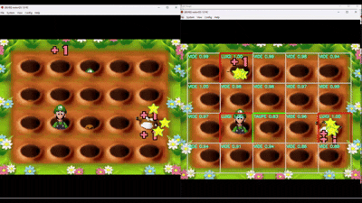
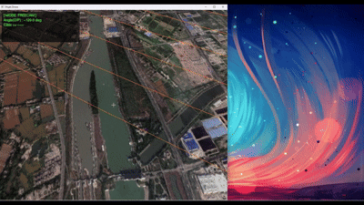
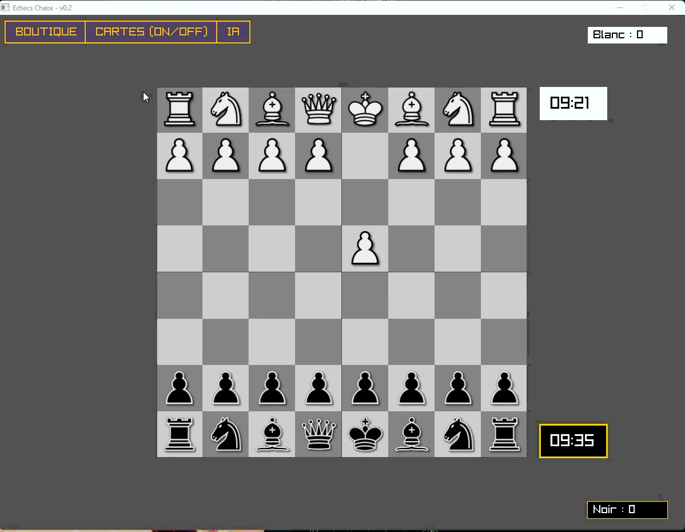

Mes Projets

IA Bot - Whack-a-Mole
Création d'un agent automatisé jouant à un mini-jeu Nintendo DS en temps réel. Entraînement d'un CNN avec TensorFlow.

UAV Visual Localization 3D
Moteur 3D interactif permettant de corréler des images satellites avec des données télémétriques de drones.

Simulateur de Trafic & Connexions V2V
Développement d'un simulateur de trafic routier et de connexions "Vehicle-to-Vehicle". L'application parse des données OpenStreetMap (OSM) pour générer un graphe routier et simule en temps réel le comportement de plusieurs milliers de véhicules. Implémentation d'un algorithme de "Spatial Hashing" pour optimiser le calcul continu du graphe d'interférences.

Échecs Chaos (Moteur C++ & IA)
Projet de fin de Master : création d'un moteur d'échecs "from scratch" intégrant des mécaniques rogue-like (cartes tactiques, événements aléatoires). Intégration native de l'API Gemini permettant de dicter des règles en langage naturel en cours de partie et de générer une analyse pédagogique (FEN) des erreurs du joueur.